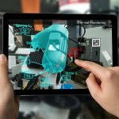

REALIDAD AUMENTADA
La realidad aumentada (RA) es una tecnología que mezcla lo que ves en el mundo real con cosas que se crean en una computadora, como imágenes, sonidos o información adicional. Es como si le pusieras una capa virtual a lo que tienes frente a ti.
Por ejemplo, cuando usas un teléfono o unas gafas especiales para ver objetos virtuales sobrepuestos en el mundo real, como si un animal digital caminara por tu habitación, o cuando te muestran información extra al mirar un edificio con una app. La RA te permite ver y experimentar cosas que no están realmente allí, pero parecen estar en tu entorno.
En resumen, es como tener una mezcla de lo real y lo virtual al mismo tiempo.
DEFINICIÓN FORMAL:
La realidad aumentada (RA) es una tecnología que superpone objetos virtuales, como imágenes, videos o información, sobre lo que vemos en el mundo real. Usando dispositivos como teléfonos, tabletas o gafas especiales, la RA permite ver y experimentar contenido digital de manera interactiva, como si formara parte del entorno físico en el que te encuentras. A diferencia de la realidad virtual, que crea un mundo completamente nuevo, la RA agrega elementos digitales al mundo real que estás observando.
Gracias a la RV podemos sumergirnos en videojuegos como si fuéramos los propios personajes, aprender a operar un corazón o mejorar la calidad de un entrenamiento deportivo para obtener el máximo rendimiento.
INICIO: Esto, que puede parecer extremadamente futurista, no tiene un origen tan reciente como podríamos pensar. De hecho, muchos consideran que uno de los primeros dispositivos de Realidad Virtual fue la denominada Sensorama, una máquina con asiento incorporado que reproducía películas en 3D, emanaba olores y generaba vibraciones para hacer la experiencia lo más vívida posible. El invento se remonta nada más y nada menos que a mediados de los años 50. A partir de ahí, el desarrollo tecnológico y de software en los años siguientes trajo consigo las evoluciones pertinentes tanto en dispositivos como en el diseño de interfaces.
CARACTERÍSTICAS DE LA REALIDAD AUMENTADA

- Interactividad: Puedes interactuar con los objetos virtuales que se agregan al mundo real, por ejemplo, tocando la pantalla o usando movimientos. La RA responde a lo que haces en tiempo real.
Superposición de elementos: La RA agrega elementos virtuales (como imágenes, textos, sonidos o videos) sobre lo que ves en el mundo real. Es como poner una capa digital sobre la realidad. - En tiempo real: La información digital se muestra en el momento en que la ves, sin retrasos. Esto significa que los objetos virtuales se actualizan y reaccionan mientras te mueves.
- Geolocalización: Algunas aplicaciones de RA usan la ubicación donde te encuentras para mostrarte contenido personalizado, como mapas o direcciones, basados en tu entorno físico.
- Uso de dispositivos especiales: Para experimentar la RA, necesitas dispositivos como teléfonos inteligentes, tabletas, gafas de RA o cámaras especiales que capturan lo que ves en el mundo real y agregan la información digital.
- Inmersión parcial: Aunque la RA agrega cosas digitales a la realidad, no te aleja completamente de ella como lo hace la realidad virtual. Siempre estás consciente de tu entorno físico.
- Perspectiva y profundidad: Los objetos virtuales que se agregan pueden parecer que tienen volumen y profundidad, y se ajustan a la perspectiva de lo que ves, lo que hace que se vean más reales.
Estas características hacen que la RA sea una herramienta poderosa para aprender, jugar y trabajar, ya que combina lo digital con lo real de forma muy interactiva.
FUNCIONALIDAD DE LA REALIDAD VIRTUAL

La funcionalidad de la realidad aumentada (RA) se refiere a cómo esta tecnología se utiliza en diferentes contextos para mejorar la experiencia del usuario. Aquí te explico algunas de las principales funcionalidades de la RA de manera sencilla:
- Superponer información adicional: La RA puede mostrar información extra sobre el entorno real. Por ejemplo, si miras un monumento a través de tu teléfono, la app de RA podría mostrar datos históricos o detalles sobre el lugar sin que tengas que buscarlo por separado.
- Mejorar la interacción con el entorno: La RA te permite interactuar con el mundo real de manera digital. Por ejemplo, puedes mover objetos virtuales en el espacio, hacer que aparezcan en diferentes lugares o cambiar su tamaño, todo a través de la pantalla de un dispositivo o gafas especiales.
- Simulación y visualización: La RA ayuda a simular situaciones o mostrar cómo quedarían las cosas en el mundo real. Por ejemplo, en una tienda de muebles, puedes ver cómo quedaría un mueble en tu habitación antes de comprarlo, o en arquitectura, visualizar cómo se vería un edificio sobre el terreno real.
- Mejora de la educación y el aprendizaje: En lugar de solo leer sobre un tema, la RA permite ver modelos 3D, interactuar con ellos y obtener una comprensión más clara y profunda. Por ejemplo, en biología, puedes ver el interior de una célula de manera detallada y explorarlo en 3D.
- Juegos y entretenimiento: Muchos videojuegos usan RA para integrar personajes o escenarios virtuales en el mundo real. Esto permite a los jugadores interactuar con el entorno de una manera más inmersiva y divertida, como en juegos de Pokémon GO.
- Asistencia y guías en tiempo real: La RA se utiliza en situaciones prácticas como guías paso a paso para reparar algo o instrucciones de montaje. Por ejemplo, mientras armamos un mueble, la RA puede mostrarte los pasos directamente en la pantalla, mientras sigues con las piezas reales.
- Publicidad y marketing: Las marcas utilizan RA para hacer que sus productos sean más atractivos. Por ejemplo, al apuntar con un teléfono a un cartel publicitario, puede aparecer un anuncio interactivo o una demostración del producto en 3D.
En resumen, la funcionalidad de la RA permite enriquecer la experiencia del usuario al integrar información y objetos digitales al mundo físico, haciendo que la interacción con el entorno sea más rica, divertida y útil.
TIPOS DE REALIDAD AUMENTADA
Dentro de los distintos tipos de realidad aumentada se destacan los siguientes:
 Realidad aumentada sobre marcadores: es aquella que usa marcadores visuales. Entre ellos se destacan los códigos QR o las imágenes. Se ejecuta a partir de la superposición de elementos virtuales.
Realidad aumentada sobre marcadores: es aquella que usa marcadores visuales. Entre ellos se destacan los códigos QR o las imágenes. Se ejecuta a partir de la superposición de elementos virtuales.
Realidad aumentada geolocalizada: es utilizada principalmente para la geolocalización de lugares específicos. Se ve en aplicaciones de turismo o entornos de navegación.
Realidad aumentada sin marcadores: para su ejecución utiliza reconocimiento de imágenes y características del propio entorno. Todo ello con el objetivo de no necesitar de los marcados visuales.
Realidad aumentada basada en reconocimiento facial: con algoritmos de detección y seguimiento facial permite superponer elementos visuales sobre los rostros de las personas. Lo verás principalmente en negocios de belleza o similar.
Realidad aumentada holográfica: se hacen proyecciones tridimensionales de un objeto virtual en un espacio real. Así, se genera una experiencia inmersiva y realista. Es muy común en el sector de la arquitectura o medicina.
APLICACIONES DE LA REALIDAD AUMENTADA
En el ámbito del entretenimiento, la AR dio lugar a experiencias interactivas y juegos inmersivos que combinan elementos virtuales con el entorno físico, proporcionando diversión y emociones únicas.
En el campo del comercio minorista, se usa para mejorar la experiencia de compra. Los clientes pueden probar virtualmente productos como ropa, maquillaje o muebles, lo que les ayuda a tomar decisiones informadas y reduce las devoluciones.
En educación, su aplicación se emplea para crear experiencias de aprendizaje envolventes. Los estudiantes pueden interactuar con objetos 3D, explorar lugares históricos o realizar experimentos virtuales, lo que fomenta el interés y la comprensión de conceptos complejos.
En medicina, la realidad aumentada permite la visualización de imágenes médicas en 3D, lo que ayuda a los profesionales a planificar cirugías con mayor precisión y a mejorar la capacitación médica.
Además, la AR se aplica en campos como la arquitectura, donde permite visualizar modelos tridimensionales de edificios, y en el turismo, donde se crean guías interactivas que ofrecen información en tiempo real sobre lugares de interés.